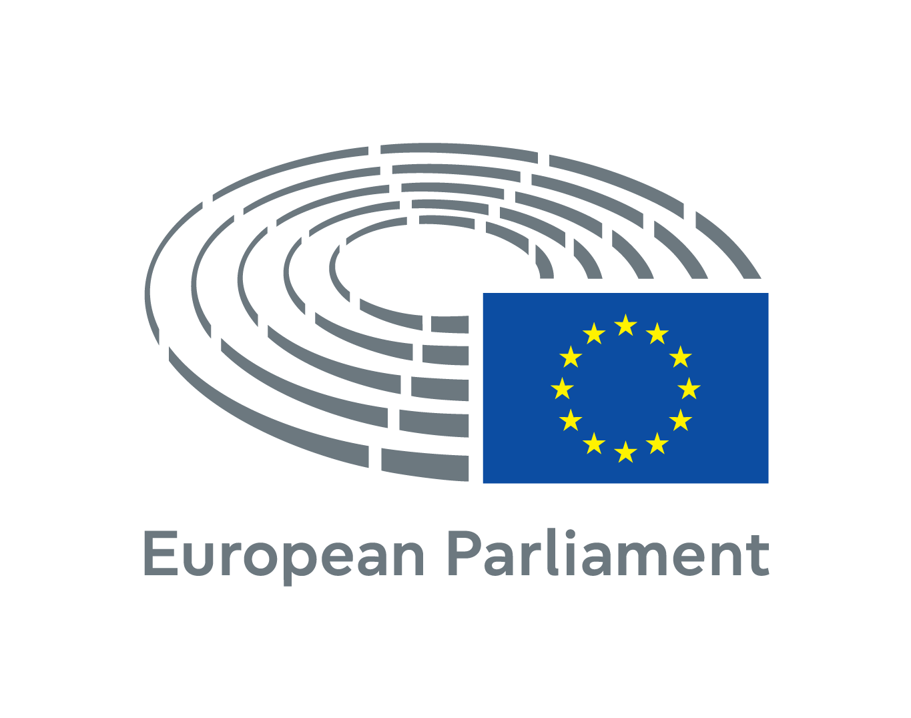
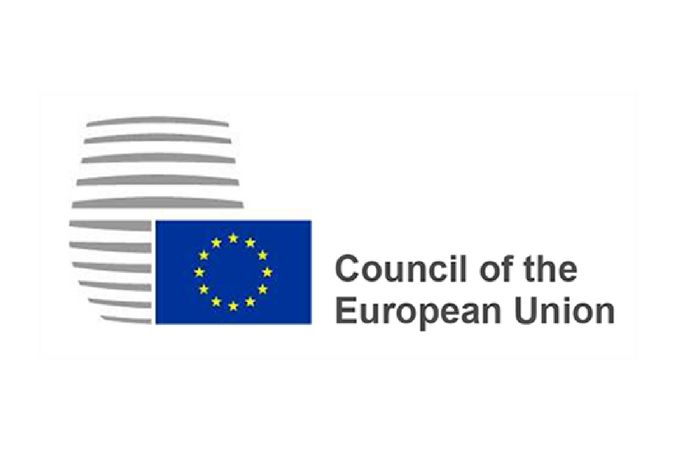
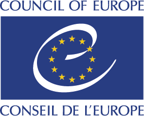
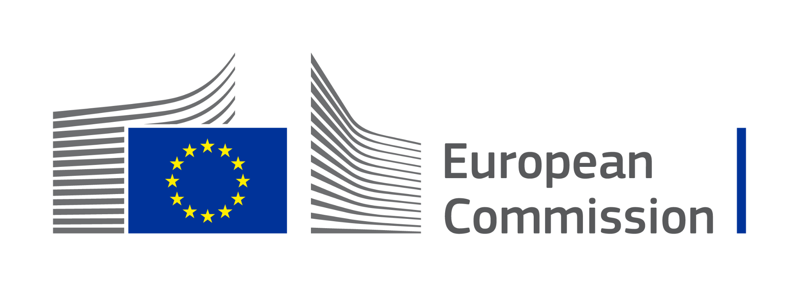

Parlamento Europeo
Composto da:Deputati eletti a suffragio universale dai cittadini ogni 5 anni. Rappresenta i cittadini europei.
Ruoli principali:- Co-legislatore: Esamina e approva le leggi con il Consiglio dell’UE.
- Bilancio: Approva il bilancio annuale UE.
- Controllo: Vigila sulle istituzioni e approva la Commissione.

Consiglio Europeo
Composto da:Capi di Stato/Governo dei 27 Paesi, dal proprio Presidente e dal Presidente della Commissione.
Ruoli principali:- Indirizzo strategico: Definisce le priorità politiche e le linee guida dell'UE.
- Attività legislativa: Non partecipa all'approvazione delle leggi.

Consiglio dell'UE
Composto da:Ministri nazionali per materia. Rappresenta i singoli governi.
Ruoli principali:- Co-legislatore: Adotta gli atti legislativi (regolamenti e direttive) con il Parlamento europeo.
- Coordinamento: Coordina le politiche economiche e di sicurezza.

Commissione Europea
Composta da:27 Commissari indipendenti (uno per Stato). Rappresenta l'interesse generale UE.
Ruoli principali:- Iniziativa esclusiva: Propone nuove leggi dell'UE.
- Organo esecutivo: Gestisce le politiche, i fondi (PNRR) e vigila sui Trattati.